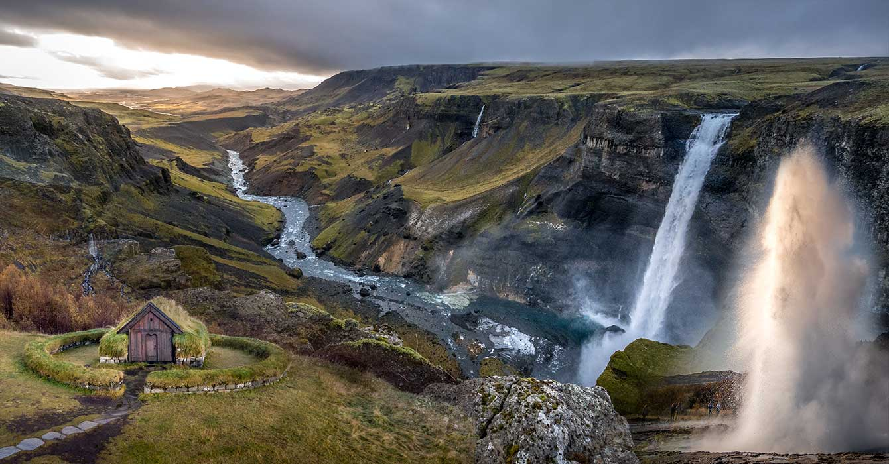
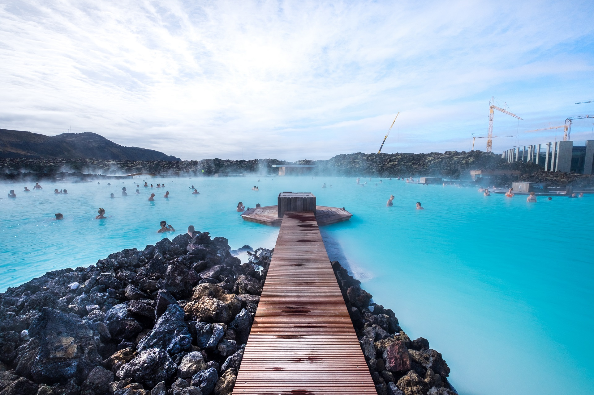
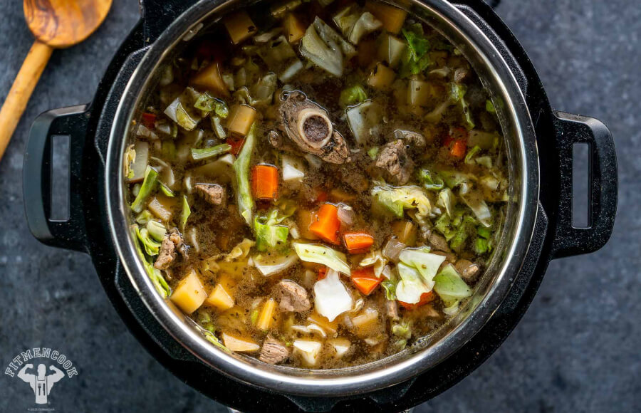

Island - Land aus Feuer und Eis
Im Nordatlantik gelegen, ist Island ein Land der Gegensätze. Von dampfenden Geysiren bis zu gefrorenen Gletschern bietet das Land eine einzigartige Landschaft voller natürlicher Wunder.
Beliebte Reiseziele:
- Reykjavik: Die nördlichste Hauptstadt der Welt, bekannt für ihre modernistische Architektur und lebendige Kunstszene.
- Golden Circle: Eine beliebte Touristenroute mit Geysiren, Wasserfällen und tektonischen Spalttälern.
- Blaue Lagune: Ein geothermisches Spa in einem Lavafeld, bekannt für sein heilendes mineralreiches Wasser.
Küche:
Die isländische Küche spiegelt die reiche maritime Kultur der Nation wider. Gerichte wie Skyr, Harðfiskur und fermentierter Hai zeigen die kulinarischen Traditionen des Landes.
Kultur:
Mit tiefen Wikingernwurzeln hat Island eine reiche literarische und musikalische Tradition. Das Land ist auch bekannt für seine Liebe zur Natur und nachhaltige Praktiken.

Stadthighlights:
Reykjavik

Bekannt für ihre nordische Architektur, ist Reykjavik ein Zentrum für Kunst, Kultur und Nachtleben.
Golden Circle
Ein natürliches Paradies, die Golden Circle Route zeigt einige der beeindruckendsten Landschaften Islands.
Blaue Lagune
Entspannen und verjüngen Sie sich in den mineralreichen Gewässern des ikonischen Spas Blaue Lagune.
Lass dir den dieses Gericht nicht entwischen: Lammesuppe (Kjötsúpa)
Kjötsúpa ist eine traditionelle isländische Lammesuppe, die besonders in den kalten Wintermonaten beliebt ist.
Zum Rezept